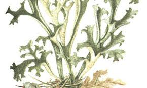

islandic-moss
Iceland moss is used for treating irritation of the mouth and throat, loss of appetite, common cold, dry cough, bronchitis, indigestion, fevers, lung disease, kidney and bladder complaints, and the tendency toward infection. Even though mosses are known for thriving in harsh environments, they still need a lot of water, above-zero temperatures and sunlight in order to grow and expand. If it's too cold or too dry, they stay dormant and wait for better living conditions.
Birch

Both the leaves and branches can be used to treat sprains, strained muscles and headaches, and steaming the leaves can help clear sinus congestion. In the early spring, the buds of the birch can be infused in oil to make a topical salve for inflamed skin. Birch trees can also be tapped for their sap to make syrup. Birch buds have long been known to have healing properties. They treat diseases of the stomach and duodenum, and relieve inflammatory processes in the lungs and liver. Birch buds improve appetite. And birch water is also a source of Vitamin C, an antioxidant that stimulates collagen production and protects the body from UV rays. Sailors historically drank birch water to ward off scurvy, a Vitamin C deficiency that causes weakness, bleeding from the skin and gum disease. In the spring picking new birch leaves for tea is easy as they are not hard to pick and dry. Birch leaves are said to be healing and good for general detox, arthritis and psoriases. Find whole birch leaves, spring or early summer, that have not been eaten by bugs. Pick them in a basket of some kind.
Clover

Health care practitioners believe that red clover "purified" the blood by acting as a diuretic (helping the body get rid of excess fluid) and expectorant (helping clear lungs of mucous), improving circulation, and helping cleanse the liver.Lowers blood pressure: Red clover has special benefits that include lowering inflammation across the body, especially in the cardiovascular system. According to numerous studies, red clover tea can greatly decrease the tension in the arteries and blood vessels, which helps lower blood pressure.Considering red clover is generally safe for most people and may work relatively quickly — potentially leading to positive changes in libido, mood, sleep, skin and bone health within several months of use— it's worth a try.The first harvest of red clover should be made when the field is at early bloom. Later cuttings can be made at late bud or early bloom. During hot and dry weather, red clover growth slows down and flowering may occur on short, stunted plants.
LINDEN-FLOWER

Tilia cordata/platyphyllos flowers are sometimes suggested to treat colds, cough, fever, infections, inflammation, high blood pressure, headache (particularly migraine); as a diuretic (increases urine production), antispasmodic (reduces smooth muscle spasm along the digestive tract), and sedative.Linden is a common name for trees belonging to the Tilia genus. The dried flower, leaves, and wood are used for medicine. People use linden for conditions such as colds, headache, trouble sleeping (insomnia), itchy skin, and many others, but there is no good scientific evidence to support these uses.Linden trees typically bloom between June and July and once they are in full bloom, it is best to harvest the flowers within the first 4 days. Remember that the large-leaved linden flowers a little earlier than the small-leaved linden does.